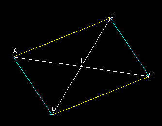

Nous nous plaçons dans un plan affine P, c'est à dire dans un espace affine de dimension 2.
Quelques définitions générales
We are dealing with an affine plane P, that is to say an affine space of dimension 2.
Some general definitions
définition 1
Une 'ligne brisée' de P consiste en la donnée d'une de points de A, disons A0,A1,...,An. Une telle ligne brisée est dite 'fermée' si An=A0, dans ce cas on dit encore que c'est un 'polygone'. Les points A0, A1, ... , An-1 s'appellent les 'sommets' du polygone.
definition 1
A 'broken line' of P consists of the data of a of points of A, say A0,A1,. ..,An. Such a broken line is said 'closed' if An=A0, in this case we still say that it is a 'polygon'. The points A0, A1, ... , An-1 are called the 'vertices' of the polygon.
définition 2
Un polygone à quatre sommets s'appelle un ' quadrilatère'.
definition 2
A polygon with four vertices is called a ' quadrilateral'.
définition 3
Les [A0A1], [A1A2], ... ,[An-1A0] s'appellent les 'côtés' du polygone.
definition 3
The [A0A1], [A1A2], ... ,[An-1A0] are called the 'sides' of the polygon.
Dans le cas des quadrilatères, par exemple, nous utiliserons plus souvent une notation ABCD de préférence à A0, A1, A2, A3. Les côtés sont donc [AB], [BC], [CD] et [DA].
In the case of quadrilaterals, for example, we will more often use an ABCD notation in preference to A0, A1, A2, A3. The sides are therefore [AB], [BC], [CD] and [DA].
définition 4
Les segments [AC] et [BD] s'appellent les 'diagonales' du quadrilatère ABCD.
definition 4
The segments [AC] and [BD] are called the 'diagonals' of the quadrilateral ABCD.
définition 5
Des côtés tels que [AB] et [BC] ayant un sommet commun, sont dits 'consécutifs'.
definition 5
Sides such as [AB] and [BC] having a common vertex, are said to be 'consecutive'.
définition 6
Dans un quadrilatère pour désigner une paire de côtés non consécutifs, on parlera de côtés 'opposés'. [AB] et [CD] sont des côtés opposés de même que [BC] et [DA].
definition 6
In a quadrilateral, to designate a pair of nonconsecutive sides, we will speak of 'opposite' sides. [AB] and [CD] are opposite sides as well as [BC] and [DA].
Dans toute la suite nous supposons que nous avons affaire à des quadrilatères 'propres'. c'est à dire que nous supposons que les 4 sommets A,B,C,D, sont 4 points distincts. Dans certains cas nou supposerons que le quadrilatère n'est pas 'plat' (4 sommets alignés).
Parallélogrammes
In the following we assume that we are dealing with 'proper' quadrilaterals. that is, we assume that the 4 vertices A,B,C,D, are 4 distinct points. In certain cases we will assume that the quadrilateral is nor 'flat' ( 4 vertices on the same line) .
Parallelograms
définition 7
Un quadrilatère ABCD d'un plan affine P est appelé un ' parallélogramme' si
\( \displaystyle \overrightarrow{AB}=\overrightarrow{DC} \)
definition 7
A quadrilateral ABCD of an affine plane P is called a ' parallelogram' if
\( \displaystyle \overrightarrow{AB}=\overrightarrow{DC} \)
En effet par la relation de Chasles
\( \displaystyle \overrightarrow{AC}=\overrightarrow{AB}+\overrightarrow{BC}=\overrightarrow{AD}+\overrightarrow{DC} \)
donc
\( \displaystyle \overrightarrow{AB}=\overrightarrow{DC}\Leftrightarrow \overrightarrow{BC}=\overrightarrow{AD} \)
Actually by the Chasles relation
\( \displaystyle \overrightarrow{AC}=\overrightarrow{AB}+\overrightarrow{BC}=\overrightarrow{AD}+\overrightarrow{DC} \)
so
\( \displaystyle \overrightarrow{AB}=\overrightarrow{DC}\Leftrightarrow \overrightarrow{BC}=\overrightarrow{AD} \)
propriété 2
ABCD parallélogramme propre (non aplati) ⇔ Les diagonales [AC] et [BD] se coupent en leurs milieux.
property 2
ABCD proper parallelogram (not flat) ⇔ The diagonals [AC] and [BD] intersect in their (common) middle points.

En effet si I est le point d'intersection de [AC] et [BD] alors
Mais dans l'égalité ci-dessus les deux vecteurs sont non colinéaires. Ils ne peuvent être égaux que s'ils sont tous deux nuls. Supposons réciproquement que le milieu I de [AC] est également le milieu I de [BD]. Alors les segments [AB] et [CD] s'échangent dans la symétrie centrale de centre I. Il en résulte bien que
But in the equality above the two vectors are non-collinear. They can only be equal if they are both zero. Let us conversely suppose that the medium I of [AC] is also the medium I of [BD]. Then the segments [AB] and [CD] are exchanged in the central symmetry of center I. It follows that
It goes without saying that in a parallelogram the two pairs of opposite sides are parallel. This result has a converse.
propriété 3
Si ABCD est un quadrilatère (propre) tel que les droites (AB) et (CD) d'une part (AD) et (BC) d'autre part soient parallèles, alors ABCD est un parallèlogramme.
property 3
If ABCD is a quadrilateral (a proper one) such that the lines (AB) and (CD) on the one hand (AD) and (BC) on the other hand are parallel, then ABCD is a parallelogram.
Vectors
\( \displaystyle \overrightarrow{u} \)
and
\( \displaystyle \overrightarrow{v} \)
being noncollinear, it follows that λ=μ=1.
Image by an element of the affine group
The following result is often useful:
propriété 4
Toute application affine bijective transforme deux droites parallèles en deux droites parallèles.
property 4
Any bijective affine map transforms two parallel lines into two parallel lines.
En effet si f est une application affine ayant u pour application linéaire associée alors si
\( \displaystyle \overrightarrow{x} \)
est un vecteur directeur commun des deux doites parallèles D1 et D2,
\( \displaystyle u\left ( \overrightarrow{x} \right ) \)
est un vecteur directeur des deux droites D'1 et D'2 images de D1 et D2 par f respectivement. Donc D'1 et D'2 sont parallèles. Nous en tirons immédiatement la conséquence suivante :
Indeed if f is an affine map having u for associated linear map then if
\( \displaystyle \overrightarrow{x} \)
is a common direction vector of the two parallel lines D1 and D2,
\( \displaystyle u\left ( \overrightarrow{x} \right ) \)
is a direction vector of the two straight lines D'1 and D'2 images of D1 and D2 by f respectively. So D'1 and D'2 are parallel. We immediately draw the following consequence:
propriété 5
L'image d'un parallèlogramme par une application affine bijective est un parallélogramme.
property 5
The image of a parallelogram by a bijective affine map is a parallelogram.
Il suffit pour le voir d'utiliser la caractérisation des parallélogrammes par les paires de côtés opposés parallèles.
It is enough to see it to use the characterization of the parallelograms by the pairs of parallel opposite sides.